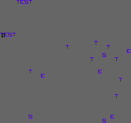

This is a default NES project to start with an already working and programmable game (in ASM or C).
This project has/can:
By default, the game play an animation with moving background tiles, a sprite and a little music to show that the game is working correctly.

You can find the project sources here: (NES Boilerplate Game)
Explanation of how to configure the game to your needs is explained there.